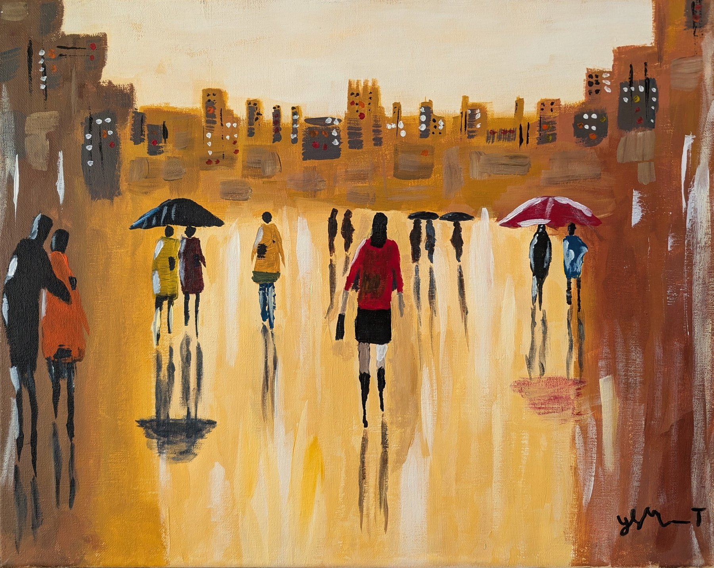

About
I'm Ron Tamir, an acrylic painter based in Massachusetts. I've always worked in tech, and painting gave me a way to slow down and reconnect with my creative side.
At first I painted just for myself, or as gifts for friends and family. But over time I started hearing things like “you should sell these,” and eventually I decided to give it a try — that's how I started selling my work, under the name Brushlight Moments.
Every piece is painted by hand using acrylic on canvas. I move between two moods — quiet, atmospheric scenes that speak through soft light and reflection, and bold, textured pieces built from saturated color and thick paint. Different in feel, but each one is trying to capture an emotion through a figure rather than a face.
Orders are packaged with care and shipped from my home in Massachusetts. Whether you're decorating your space or gifting something meaningful, I hope you find a painting that connects with you.
Thanks for being here. You can find the full collection on Etsy, under Brushlight Moments.